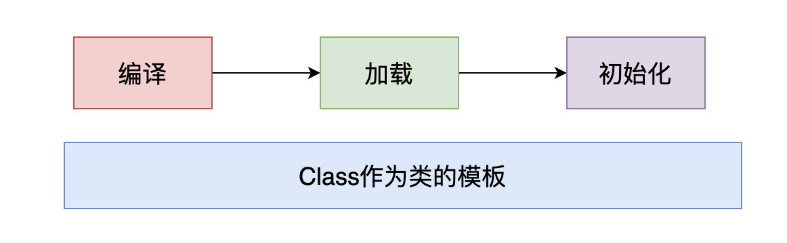
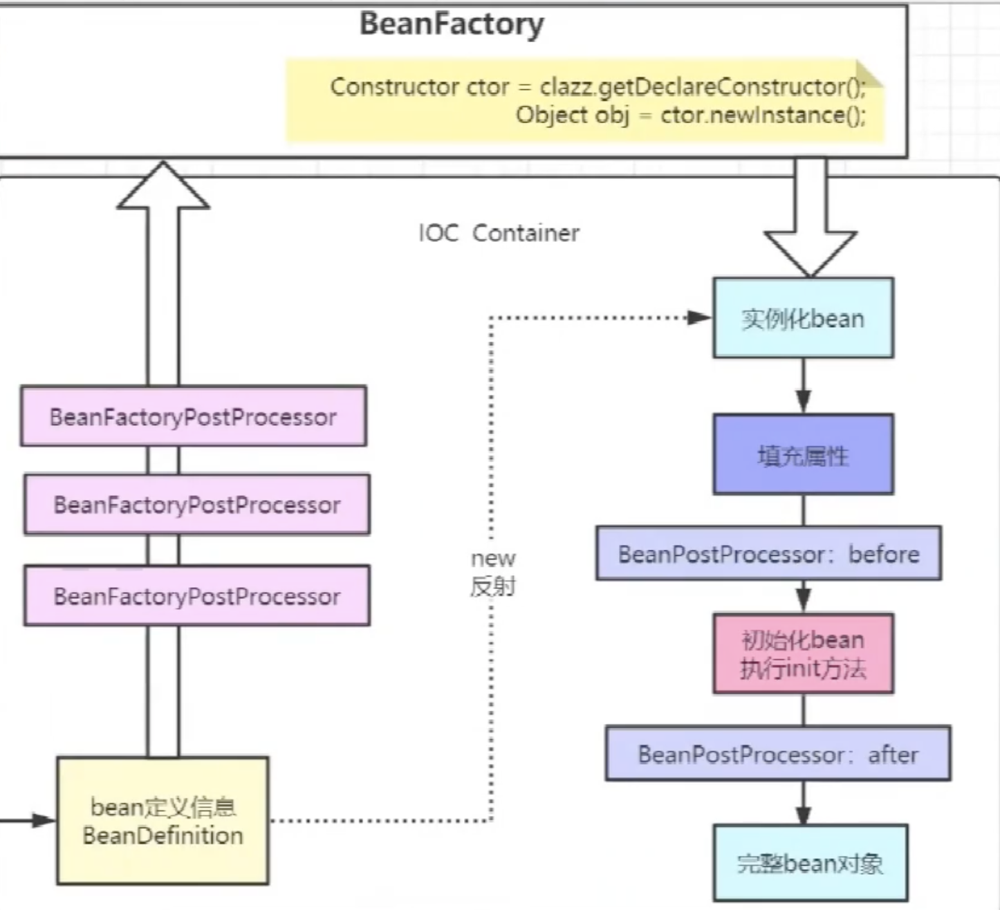

Spring源码深度解析
Spring源码深度解析 读书整理
Spring是于2003年兴起的一个轻量级的Java开源框架，由Rod Johnson在其著作《Expert One-On-One J2EE Development and Design》中阐述的部分理念和原型衍生而来。Spring是为了解决企业应用开发的复杂性而创建的，它使用基本的JavaBean来完成以前只可能由EJB完成的事情。然而，Spring的用途不仅限于服务器端的开发。从简单性、可测试性和松耦合的角度而言，任何Java应用都可以从Spring中受益
1.1 Spring的整体架构
Spring框架是一个分层架构，它包含一系列的功能要素，并被分为大约20个模块，如图1-1所示。

Spring官网中对IOC的定义。
1.1. Introduction to the Spring IoC Container and Beans
This chapter covers the Spring Framework implementation of the Inversion of Control (IoC) principle.
本章介绍控制反转（IoC）原理的Spring框架实现。
IoC is also known as dependency injection (DI).
IoC也称为依赖注入（DI）。
It is a process whereby objects define their dependencies (that is, the other objects they work with) only through constructor arguments, arguments to a factory method, or properties that are set on the object instance after it is constructed or returned from a factory method.
它是这样一个过程：对象仅通过构造函数参数、工厂方法的参数或在对象实例构造或从工厂方法返回后在对象实例上设置的属性来定义它们的依赖关系（即它们使用的其他对象）。
The container then injects those dependencies when it creates the bean.
然后容器在创建bean时注入这些依赖项。
This process is fundamentally the inverse (hence the name, Inversion of Control) of the bean itself controlling the instantiation or location of its dependencies by using direct construction of classes or a mechanism such as the Service Locator pattern.
这个过程基本上是bean本身的逆过程（因此称为控制反转），通过使用类的直接构造或服务定位器模式等机制来控制其依赖项的实例化或位置。
- 定义规范，解析各种配置文件。关键类 BeanDefinitionReader
- 解析好之后，BeanDefinition接口，根据规则
- 实例化：在堆中开辟空间，属性都是默认值。初始化：给属性完成赋值。
- BeanFactory定义创建bean的规范。
java通俗理解下对象的创建方式：
- .java文件被编译为.class文件
- 需要被初始化时（比如new 反射等），class文件被虚拟机通过类加载器加载到jvm
- 初始化class对象的实例供使用

java 反射构建对象的方式。
- Class.forName(“完全限定名”);
- 对象.getClass();
- 类.class;
Constructor ctor = clazz.getDeclareConstructor();
Object obj = ctor.getNewInstance();
BeanDefinition 表示bean定义
Spring根据 BeanDefinition来创建Bean对象, BeanDefinition有很多的属性用来描述Bean
BeanDefinition中的属性：
- beanClass 表示一个bean的类型，比如OrderService.class,UserService.class,spring在创建bean的时候会根据此属性实例化得到对象。
- scope 表示一个bean的作用域,比如: scope:等于 singleton,该bean就是一个单例Bean; sope等于 prototype,该bean就是一个原型bean
- isLazy 表示一个bean是不是需要懒加載，原型bean的 isLazy属性不起作用， 懒加载的单例bean，会在第一次 getBean的时候生成该bean，非懒加载的单例bean，则会在 Spring启动过程中直接生成好。
- dependsOn 表示一个bean在创建之前依赖的其他bean，在一个bean创建之前，依赖的其他bean都要创建好。
- primary 表示一个bean是主bean，在spring中一个类型可以有多个bean对象，在进行依赖注入时，如果根据类型找到了多个bean，此时会判断是否存在一个主bean，如果存在，则直接将主bean注入给属性。
- initMethodName 表示一个bean的初始化方法，一个bean的声明周期过程中有一个步骤叫初始化，Spring会在这个步骤中去调用bean的初始化方法，初始化方法的逻辑由程序员自己控制，表示程序员可以自定义逻辑对bean进行加工。
@Component，@Bean，XML的bean标签。这些都会解析为BeanDefinition
BeanFactoryPostProcessor 增强器（后置处理器）
Factory hook that allows for custom modification of an application context’s bean definitions, adapting the bean property values of the context’s underlying bean factory.
工厂钩子，允许自定义修改应用程序上下文的bean定义，调整上下文基础bean工厂的bean属性值。
PlaceholderConfigurerSupport 写法为：${…}
Abstract base class for property resource configurers that resolve placeholders in bean definition property values. Implementations pull values from a properties file or other property source into bean definitions.
解析bean定义属性值中占位符的属性资源配置器的抽象基类。实现将属性文件或其他属性源中的值拉入bean定义。
BeanPostProcessor 实现AOP的基类
该接口有两个默认方法。分别是：
- postProcessBeforeInitialization
- postProcessAfterInitialization

Environment 接口 继承PropertyResolver
Interface representing the environment in which the current application is running. Models two key aspects of the application environment: profiles and properties. Methods related to property access are exposed via the PropertyResolver superinterface.
表示当前应用程序正在其中运行的环境的接口。为应用程序环境的两个关键方面建模：概要文件和属性。与属性访问相关的方法通过PropertyResolver超级接口公开。
实现类StandardEnvironment 获取系统级别环境变量
Environment implementation suitable for use in ‘standard’ (i.e. non-web) applications.
In addition to the usual functions of a ConfigurableEnvironment such as property resolution and profile-related operations, this implementation configures two default property sources, to be searched in the following order:
AbstractApplicationContext
Abstract implementation of the ApplicationContext interface. Doesn’t mandate the type of storage used for configuration; simply implements common context functionality. Uses the Template Method design pattern, requiring concrete subclasses to implement abstract methods.
ApplicationContext接口的抽象实现。不强制用于配置的存储类型；简单地实现公共上下文功能。使用模板方法设计模式，需要具体的子类来实现抽象方法。
关键方法：refresh()
1 |
|
1 | /** |
FactoryBean
1 | public interface FactoryBean<T> { |
If you like this blog or find it useful for you, you are welcome to comment on it. You are also welcome to share this blog, so that more people can participate in it. If the images used in the blog infringe your copyright, please contact the author to delete them. Thank you !